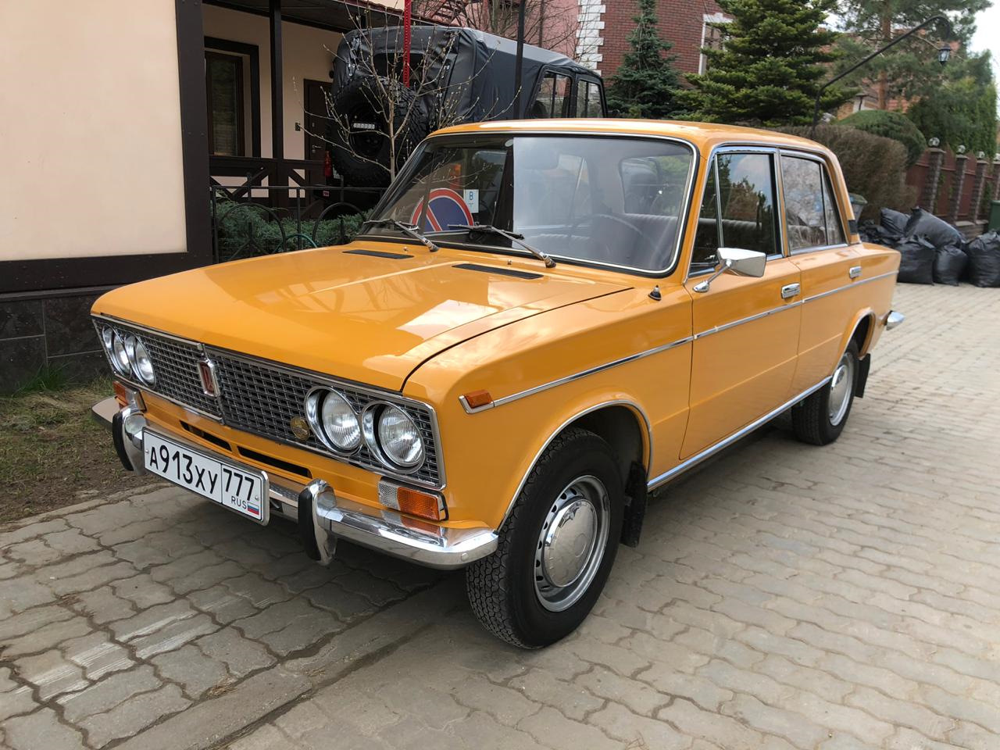
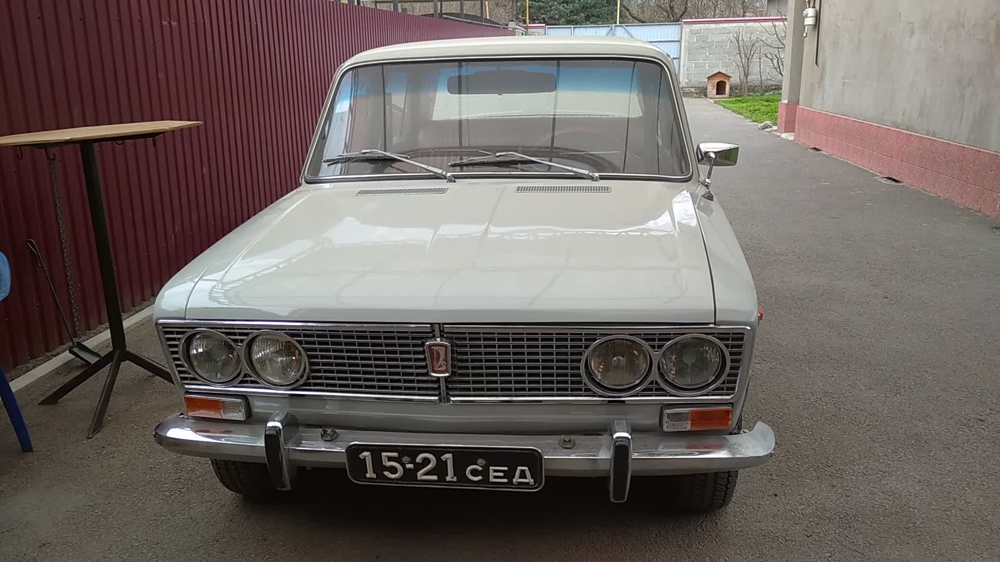
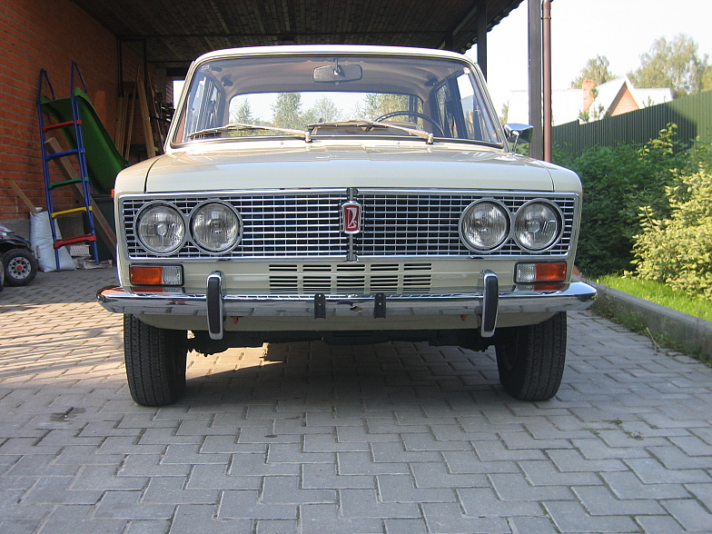
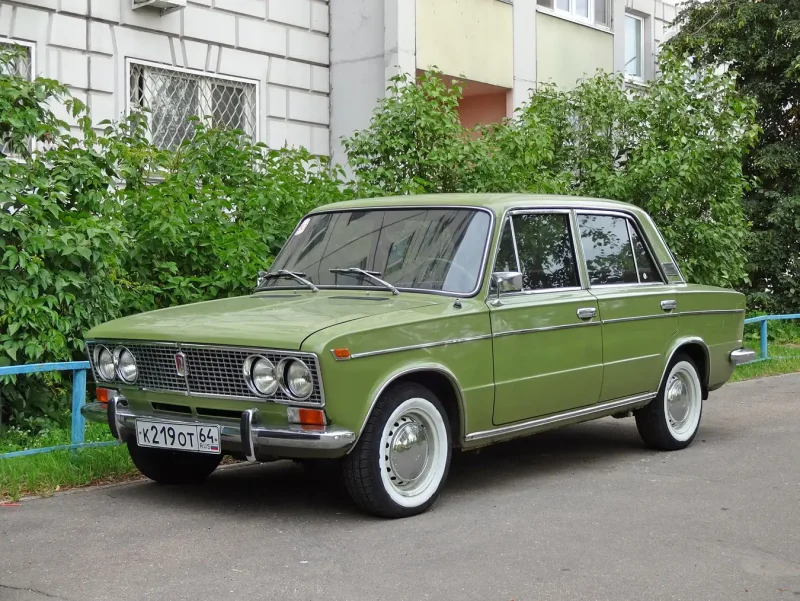
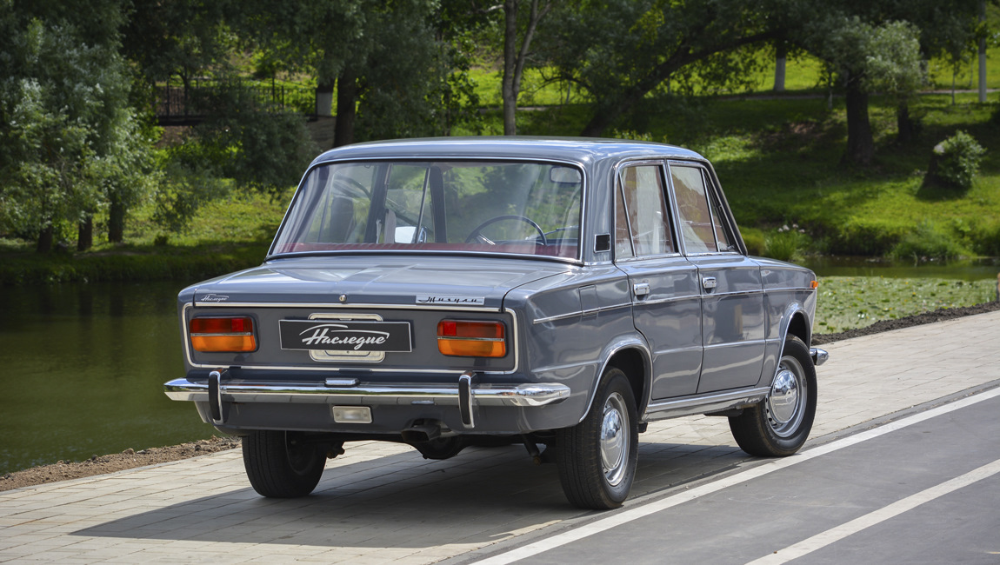
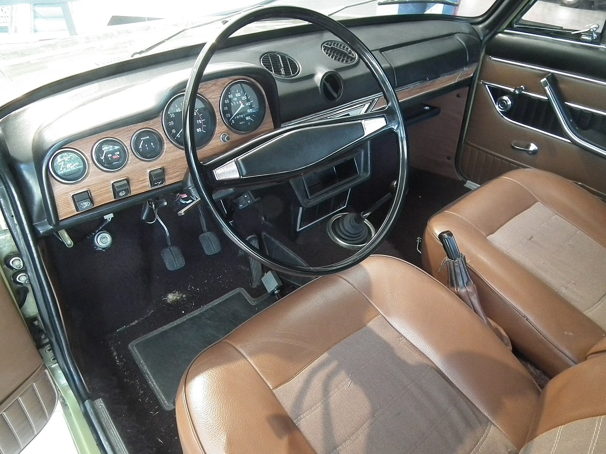

ВАЗ-2103 «Жигули» - советский заднеприводный автомобиль II группы малого класса с кузовом седан. Был разработан совместно с итальянской фирмой Fiat на базе модели Fiat 124 и серийно выпускался на Волжском автомобильном заводе с 1972 по 1984 год. Преемником «Тройки» в иерархии моделей Волжского автозавода считался ВАЗ-2107.
Fiat 124, ставший прототипом моделей ВАЗ-2101 и ВАЗ-2103, был впервые представлен публике в 1964 году, серийное производство в Италии началось в 1966. В следующем, 1967 году фирмой был представлен автомобиль более высокого класса со схожим дизайном — Fiat 125.
При подписании в 1966 году договора между Минавтопромом СССР и компанией Fiat было оговорено, что Fiat предоставит советской стороне полную техническую документацию на две комплектации автомобиля — «норма» и «люкс». Представленные готовые решения от Fiat были таковы: для «нормы» — Fiat 124 (на базе которого началось производство ВАЗ-2101), а для «люкса» — Fiat 125 (на базе которого началось производство ВАЗ-2103). ВАЗ-2103 представляет собой совместную разработку Fiat и ВАЗ. Работы по дизайну автомобиля выполнил Центр стиля Fiat, а по технической оснастке под советские условия эксплуатации — в конструкторским отделом ВАЗ. Сердцевина кузова использовалась от ВАЗ-2101.
Разные виды фартуков ВАЗ-2103:

Конец 1972 - середина 1973 «Глухой» фартук. Такой фартук шел на первых 24 тысячах автомобилях

С середины 1973 по середину 1975 г.г. пошла так называемая «тёрка»

С середины 1975 и до конца производства шли два «окна», которые так же перешли и на ВАЗ-2106
В 1972 году собрали 1429 машин, из которых 911 машин это ВАЗ-2103В (В — «временный»). Эта партия комплектовалась салоном от ВАЗ-2101 в связи с тем, что изначально планировали выпустить лишь 500 автомобилей в 1972 году, и на оставшиеся машины не хватило комплектующих салона.
Все это, вкупе с хорошим качеством сборки, сделало эту машину одной из самых престижных моделей советского автопрома 1970-х годов, а некоторые ценители марки считают её самой элегантной и стильной моделью ВАЗа. В декабре 1974 года эту модель отметили «Знаком качества».
Стоимость ВАЗ-2103 составляла 7500 рублей, в то время как ВАЗ-2101 стоил 5500 рублей. В советское время ВАЗ-2103 считался люксовым автомобилем, который уступал по престижности только ГАЗ-24 «Волга».
В 1976 году планировалось начать производство версии ВАЗ-2103 в кузове универсал, однако в серию эта модификация не пошла. Было выпущено всего три таких автомобиля.
Несмотря на изменённую в 1975 году форму переднего фартука и введению в 1977 году более современных клемм и соединений электропроводки, за всё время производства на конвейере автомобиль не претерпел никаких значительных внешних изменений.
За 12 лет было выпущено 1 304 899 автомобилей «третьей» модели. Чуть более «престижная» модель ВАЗ-2106, являвшаяся по факту модернизацией «тройки» выпускалась с 1976 до 2006 года.
В текущий момент известны:
самый ранний автомобиль ВАЗ-2103, конвейерный номер 0 000 047, выпуск сентябрь 1972.
самый поздний автомобиль ВАЗ-21033, конвейерный номер 1 305 735, выпуск конца 1983.
Вид сзади

Панель приборов

Внешне 2103 хоть и напоминал Fiat 125, однако являлся полностью переработанным: передок ВАЗ-2103 имеет больший отрицательный наклон, а линии передних крыльев в районе стыка с радиаторной решёткой и капотом стали заметно острее.
В оформлении кузова применялось очень большое количество хромированных элементов: молдинги на бортах, порогах и арках, решётка радиатора, бампера, окантовки окон, колпаки на колёсах.
В прямоугольную облицовку радиатора, занимающую всю ширину передка, вписаны сдвоенные четыре фары, которые обеспечивали более равномерное освещенность дороги, чем две фары на ВАЗ-2101. При включении дальнего света зажигаются все фары, а при включенном ближнем — горят только наружные. Из-за отсутствия до запуска ВАЗ-2106 в 1976 году в советской промышленности технологии производства таких фар, их производством занимался комбинат FER в ГДР, позже фары поставляла чехословацкая фирма «Автопал». Сзади появились большие двухцветные фонари.
На торцах передних дверей появились красные лампы, которые загораются при открывании двери (если включено наружное освещение), предупреждая водителей других машин.
Салон ВАЗ-2103 имел существенные отличия от салона ВАЗ-2101: комбинированная обивка сидений из сукна и кожзаменителя (на заднем диване посередине появился откидной подлокотник), карты дверей, руль, новая торпеда имела фальш-вставки под дерево и часы в центре, а на новой приборной панели появился тахометр и счётчик суточного пробега на спидометре, с завода устанавливался радиоприёмник «Былина А271».
В дополнение к новым штампам колёс появились новые радиальные покрышки ИЯ-170, которые были немного шире и мягче диагональных покрышек И-151 от ВАЗ-2101.
В итоге ВАЗ-2103 была идентичен ВАЗ-2101 на 80 % — отличия заключались преимущественно в навесных панелями передней и задней частей, а также другим салоном.
В итоге дизайн ВАЗ-2103 получился весьма современным (на начало 1970-х годов) и заметно отличался от других советских автомобилей.
Характеристики
На мелкосерийную 21031 ставили 1,6-литровый двигатель мощностью 80 лошадиных сил. Ещё один экспортный вариант — 21035. На данную модификацию ставили 1,2-литровый двигатель от 2101 мощностью 59 л. с.
На ВАЗ-2103 устанавливался двигатель 1,5 л. (77 л. с.), являвшийся модернизированным вариантом двигателя FIAT-124. Его отличие заключается в том, что волжский двигатель имел другую толщину стенок блока цилиндров — 215,9 мм вместо 207,1 мм на итальянском агрегате. Соответственно, увеличился рабочий объём до 1,5 л., а коленвал имел увеличенный ход поршня.
На ВАЗ-2103 устанавливались 4-хступенчатая МКПП. На экспортной модели Lada 1500S Automatic устанавливалась 3-хступенчатая АКПП 3L30 производства General Motors (собиралась в Страсбурге, Франция).
Модификации